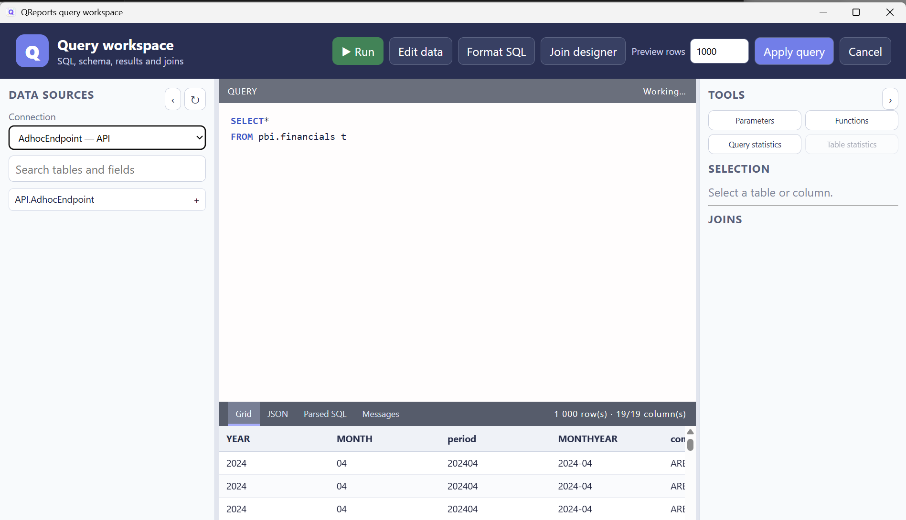

Mini SQL for Excel tables
Mini SQL is QReports' in-memory query language for Excel tables and delimited files. It provides a familiar SQL-shaped way to filter, join, group, calculate, and sort tabular data without first loading it into an external database.
Mini SQL is used when Conn is set to table and for saved CSV/TEXT file connections. The same engine is also used for published Canvas tables.

First query
Assume the workbook contains Excel tables named country and continent:
SELECT
continent,
SUM(population) AS population_total
FROM country
WHERE year = 2025
GROUP BY continent
ORDER BY population_total DESC
To run it:
- Open Query Tool.
- Select
tablefrom Conn. - Select Table to list workbook tables.
- Enter the Mini SQL statement.
- Select Run or press F5.
Table and column names come from Excel table names and headers, not worksheet names or cell addresses.
Supported statement shape
Mini SQL supports one SELECT statement with the following general shape:
SELECT [TOP number]
expression [AS alias], ...
FROM table [alias]
[INNER | LEFT | RIGHT | FULL [OUTER]] JOIN table [alias] ON condition
[WHERE condition]
[GROUP BY column, ...]
[HAVING condition]
[ORDER BY expression [ASC | DESC], ...]
Supported query features include:
SELECT *for ordinary, non-aggregated projections;- column aliases with
AS; - table aliases;
TOP n;- inner, left, right, and full joins;
WHEREcomparisons using=,<>,<,>,<=, and>=;AND,OR,IN (...),BETWEEN,LIKE,IS NULL, andIS NOT NULL;GROUP BY, aggregate expressions, andHAVING;ORDER BY ... ASCandORDER BY ... DESC;CASE WHEN ... THEN ... ELSE ... END;- QReports parameters such as
{{pyear}}.
With grouping or aggregate expressions, list every required non-aggregate output column in GROUP BY. SELECT * is not supported in an aggregate query.
Joins and aliases
Aliases make joins easier to read and prevent ambiguous column names:
SELECT
c.country_name,
c.continent_code,
g.continent_name,
c.population
FROM country c
LEFT JOIN continent g
ON c.continent_code = g.continent_code
WHERE c.population > 1000000
ORDER BY c.population DESC
Join conditions should use column equality or other straightforward comparisons. Mini SQL is intended for table-shaped reporting logic; highly nested database join expressions should remain in the source database.
Filters and parameters
SELECT country_name, year, population
FROM country
WHERE year BETWEEN 2020 AND 2025
AND continent_code IN ('EU', 'NA')
AND country_name LIKE 'N%'
AND population IS NOT NULL
String literals use single quotes. A single quote inside a value is doubled: 'O''Brien'.
Parameters are resolved before Mini SQL runs:
SELECT country_name, population
FROM country
WHERE year = {{pyear}}
AND {{continent}}
If continent produces continent IN ('Europe','Asia'), the parsed statement is valid Mini SQL. Use Query > Parse query to inspect the exact result.
Aggregate functions
| Function | Syntax | Purpose |
|---|---|---|
COUNT |
COUNT(column) |
Count non-null values. |
COUNTDISTINCT |
COUNTDISTINCT(column) |
Count distinct non-null values. |
SUM |
SUM(column) |
Sum numeric values. |
AVG |
AVG(column) |
Average numeric values. |
MIN |
MIN(column) |
Minimum value. |
MAX |
MAX(column) |
Maximum value. |
CONCAT |
CONCAT(column [, delimiter]) |
Join unique text values; comma is the default delimiter. |
SELECT
continent,
COUNTDISTINCT(country_code) AS countries,
SUM(population) AS population,
CONCAT(country_name, ', ') AS country_list
FROM country
GROUP BY continent
HAVING SUM(population) > 100000000
ORDER BY population DESC
String functions
| Function | Syntax | Example |
|---|---|---|
SUBSTRING |
SUBSTRING(text, start, length) |
SUBSTRING(country_name, 1, 3) |
LENGTH |
LENGTH(text) |
LENGTH(country_name) |
REPLACE |
REPLACE(text, find, replacement) |
REPLACE(code, '-', '') |
TRIM |
TRIM(text) |
TRIM(country_name) |
LEFT |
LEFT(text, length) |
LEFT(account, 3) |
RIGHT |
RIGHT(text, length) |
RIGHT(account, 2) |
UPPER |
UPPER(text) |
UPPER(country_name) |
LOWER |
LOWER(text) |
LOWER(country_name) |
FORMAT |
FORMAT(value, format) |
FORMAT(amount, '#,##0.00') |
SUBSTRING uses a one-based start position. FORMAT returns text and uses the current Windows culture.
Date functions
| Function | Syntax | Notes |
|---|---|---|
GETDATE |
GETDATE() |
Current local date and time. |
TODAY |
TODAY() |
Current local date with no time. |
XLDATE |
XLDATE(value) |
Convert an Excel serial value to a date. |
XLDATETIME |
XLDATETIME(value) |
Convert an Excel serial value to date and time. |
DATEADD |
DATEADD(interval, number, date) |
Adds an interval; fractional numbers truncate and month ends clamp. |
DATEDIFF |
DATEDIFF(interval, date1, date2) |
Integer date-part boundaries crossed, not fractional elapsed time. |
YEAR |
YEAR(date) |
Extract the year. |
MONTH |
MONTH(date) |
Extract the month number. |
WEEK |
WEEK(date) |
Same as DATEPART(week,date). |
ISOWEEK |
ISOWEEK(date) |
ISO week number 1-53; weeks start Monday, and week 1 contains January 4. Same as DATEPART(iso_week,date). |
DATEPART |
DATEPART(part, date) |
Extract a date part, including ISO week. |
The interval/part accepts both bare keywords and quoted strings: DATEADD(d,7,t.date) and DATEADD('d',7,t.date) are equivalent. Aliases are case-insensitive.
| Part | Accepted aliases |
|---|---|
| Year | year, yy, yyyy, y |
| Quarter | quarter, qq, q |
| Month | month, mm, m |
| Day | day, dd, d |
| Day of year | dayofyear, dy |
| Week | week, wk, ww |
| Weekday | weekday, dw, wd, w |
| Hour | hour, hh, h |
| Minute | minute, mi, n |
| Second | second, ss, s |
| Millisecond | millisecond, ms |
| ISO week (DATEPART only) | iso_week, isowk, isoww |
DATEPART(week,date) and WEEK(date) use Sunday-first weeks with January 1 in week 1. DATEPART(weekday,date) returns Sunday = 1 through Saturday = 7. MiniSQL does not support SET DATEFIRST. Use DATEPART(iso_week,date) for Monday-first ISO week numbering. This replaces the previous Monday/first-four-day behavior of DATEPART(week,...).
DATEDIFF counts boundaries: from 23:59:59 to midnight is 1 day, 1 hour, 1 minute and 1 second. Week differences count Sunday boundaries. Year, quarter and month differences count calendar boundaries, not complete elapsed periods. Results are signed 32-bit integers; overflow is an error. This replaces the previous elapsed-time day/hour/minute/second calculation. DATEADD(weekday,...) adds calendar days, not working days. This follows SQL Server boundary semantics.
Compatibility aliases y (year), h (hour), wd/w (weekday) are retained. Unlike SQL Server's y, MiniSQL's legacy y means year; use dy or dayofyear for day of year. NULL arguments return NULL. Dates, date strings and numeric Excel serial dates are supported. MONTH(date) returns 1-12.
FORMAT(value,'pattern') uses system culture and .NET numeric/date patterns. Prefer yyyy-MM for year/month. Excel-style lowercase month tokens are also accepted in date-only patterns: FORMAT(t.date,'yyyy-mm') returns, for example, 2026-09. In a time pattern such as yyyy-MM-dd HH:mm, uppercase MM means month and lowercase mm means minutes. The query option to disable FORMAT returns the original value instead of text.
SELECT
invoice_date,
YEAR(invoice_date) AS invoice_year,
DATEADD(month, 1, invoice_date) AS next_month,
FORMAT(invoice_date, 'yyyy-MM-dd') AS date_text
FROM invoices
Logical, numeric, and conversion functions
| Function | Syntax | Purpose |
|---|---|---|
CASE |
CASE WHEN condition THEN value ELSE value END |
Conditional output. |
IIF |
IIF(condition, trueValue, falseValue) |
Inline condition. |
COALESCE |
COALESCE(value1, value2, ...) |
First non-null value. |
ISNULL |
ISNULL(value, replacement) |
Replace a null. |
ROUND |
ROUND(number, decimals) |
Round to decimal places. |
FLOOR |
FLOOR(number) |
Round down. |
CEILING |
CEILING(number) |
Round up. |
ABS |
ABS(number) |
Absolute value. |
MOD |
MOD(dividend, divisor) |
Division remainder. |
CAST |
CAST(expression, 'datatype') |
Convert to a supported type. |
Supported CAST targets include integer, long, double, decimal, text, date, datetime, and Boolean aliases. Mini SQL uses CAST(value, 'INT'), not SQL Server's CAST(value AS INT) syntax.
CONVERT may appear in function-help metadata in some builds, but the Mini SQL evaluator currently implements CAST. Prefer CAST for portable QReports definitions.
Differences from database SQL
Mini SQL deliberately does not try to be a full database server:
- it operates on in-memory table data and has no database indexes or query optimizer;
- it supports one
SELECT, notINSERT,UPDATE,DELETE,MERGE, or stored procedures; - CTEs, subqueries,
UNION, window functions, and database-specific syntax are not supported; - use
TOP n;LIMITandOFFSETare not part of the parser; - schema-qualified database names are not relevant to workbook table mode;
- function coverage and null/type conversion rules are smaller than in a database;
- very large workbooks can use substantial memory because source tables are materialized;
- culture can affect text-to-number, date parsing, and
FORMAToutput; - database permissions, transactions, indexes, and execution plans do not apply.
Use Mini SQL when the source is already in Excel and the transformation is report-sized. Use a named database connection when the source is large, the SQL is complex, or filtering and aggregation should happen on the server.
CSV and delimited text files
Create a CSV or TEXT connection in Connection Manager and select the source file. Configure separator, whether the first row contains headers, and encoding. Quoted fields are supported.
The source appears using a normalized version of its filename. The stable alias data is also available, which avoids problems when a filename contains spaces or punctuation:
SELECT region, SUM(amount) AS amount
FROM data
GROUP BY region
ORDER BY amount DESC
Delimited values are initially read as text. Use the Mini SQL conversion functions when numeric or date interpretation is required, and verify separators/encoding if the preview produces an unexpected number of columns.
Return to the Query Tool guide.